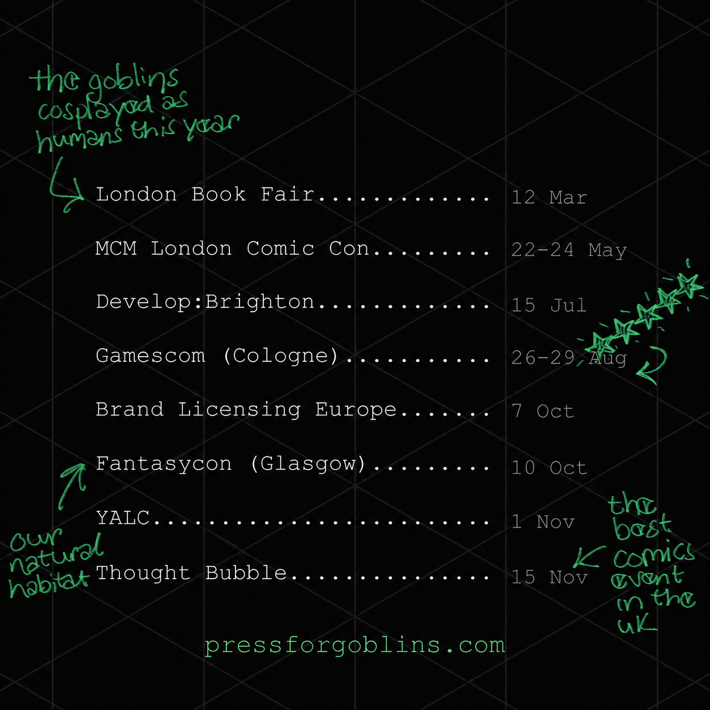

despite centuries of bad press, we goblins can be fairly sociable (depending on our hunger levels and the time of day ofc)
whether or not you need an editor, writer or narrative designer right now, if you’re making a book, comic or game and see us at an event, come and say hello
here’s where we’ve been and where you can bump into us next